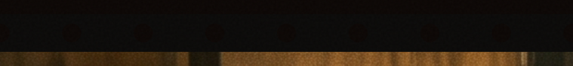
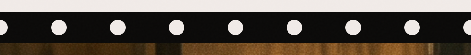
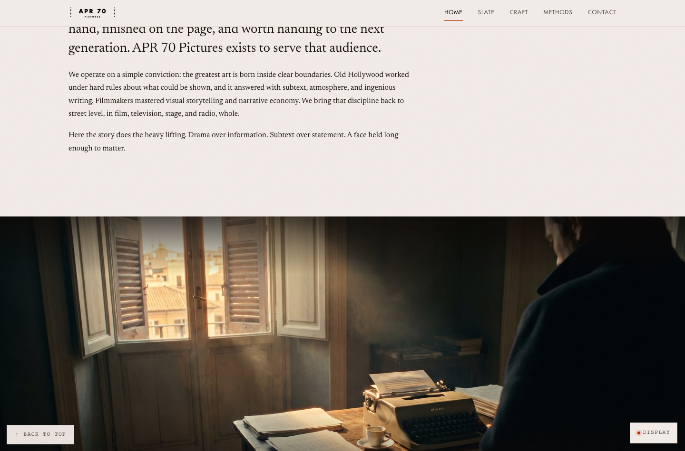
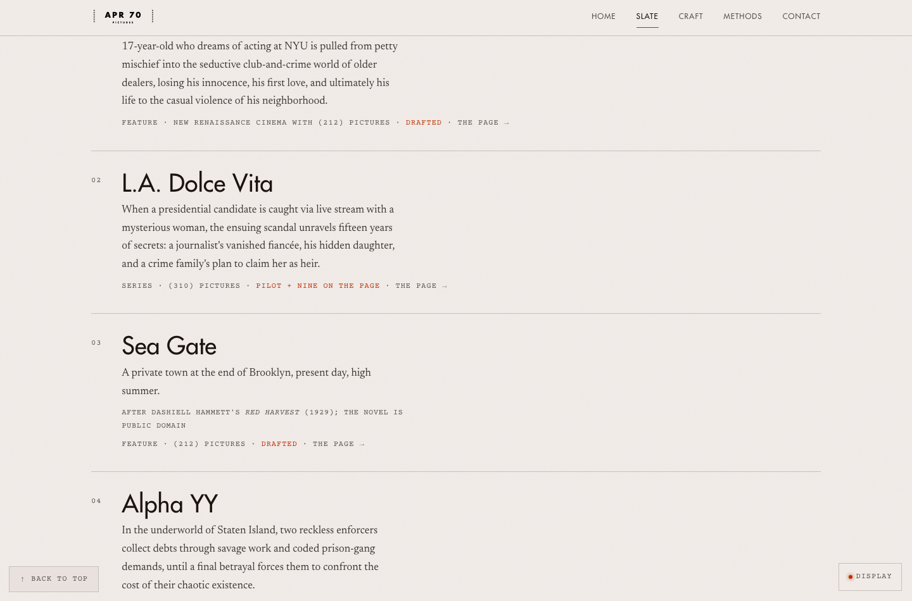
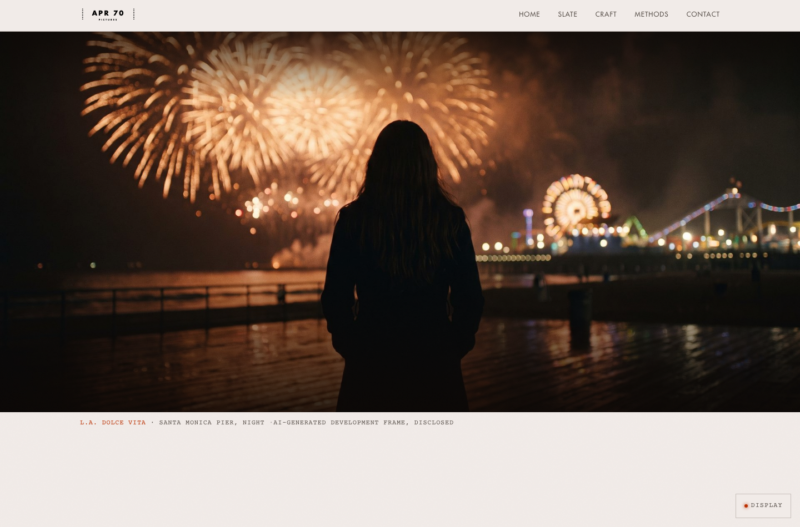
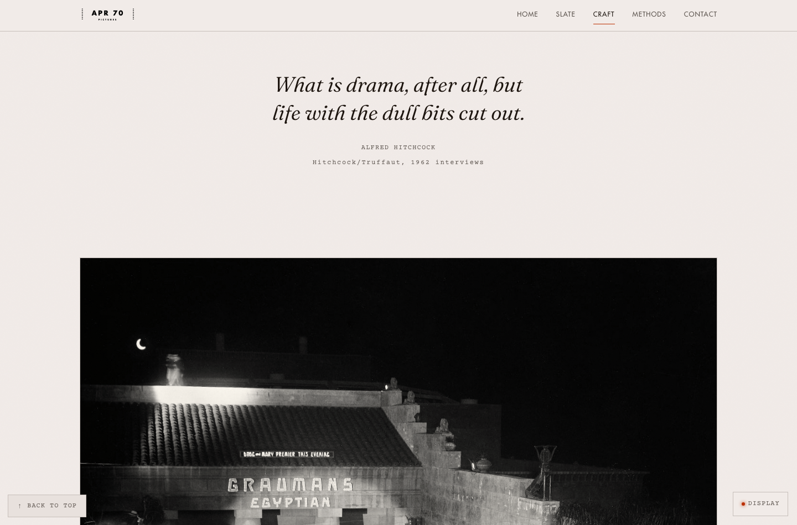

APR 70 PICTURES · V11 PRE-FLIGHT · 2026-07-13 · ASSESS AND STOP
No code was changed. Everything below is a proposal you can look at, hover over, and switch modes on. The live site is untouched.
Zero changes made to the site
1THE BUG YOU CAUGHT confirmed
You are right, and the cause is exact. The sprocket holes are painted
var(--bg-0) ... the page background. In House Lights that is cream and they read
beautifully. In Marquee Night it is oklch(0.13 …), near black, and the film stock
behind them is #0a0908, also near black. Black holes punched in black
film.
This is mine. I fixed the shape this morning ... they were ellipses, now they are true circles ... and I verified it in House Lights only, because that is the mode my test browser happened to be in. I never looked at Marquee Night, which is the signature mode. The colour was broken before I touched it and I shipped straight past it.
Toggle the switch at the top right of this page and watch the first strip vanish.
A · shipped today — holes = var(--bg-0) — invisible in Marquee Night
B · proposed fix — holes are LIGHT in both modes
The reasoning is physical, not cosmetic. Film is backlit. A perforation shows you the lamp behind the stock. It should never show you the wall behind the screen. So the hole colour is a constant of the film, not a variable of the page.
C · proposed fix, plus the bulbs actually glow your call
Same fix, with a warm bloom on each hole. This is
the "little touch" version ... it costs one drop-shadow and it is the difference
between a perforation and a bulb.


2THE DISPLAY PILL your ruling
You are right that it does not earn its place. Here is the fact that settles it: the Display panel now contains exactly one control ... the three theme chips. In v9 it held a type-size dial, a logo-size slider, swatch chips, and it was draggable. All of that was retired. What is left is a floating box, permanently on screen, on every page, to do one job that a 17px icon does better.
now — a floating pill, bottom right, on every page, forever
proposed — the mode lives in the nav. click the icon; it works.
That icon is live. Click it. It drives this whole page, and it is the entire feature.
| Thing | Where it goes |
|---|---|
| Theme chips (Marquee night / House lights / System) | The icon covers dark and light. "System" is the one real casualty ... it becomes the default when a visitor has not chosen, rather than a thing they pick. That is how most sites do it and I think it is correct, but it is your call. |
| The glowing bulb on the pill | It was the nicest thing about the pill. It can move onto the nav icon as a hover glow. |
| Type size and logo size dials | Already gone in v10. The pill was not carrying them. |
3THE PROPERTY HOVER pick one
Gemini's hover work is not recoverable ... it never made it into git, it lived in the workspace you deleted. So rather than describe it, here are three built from scratch. Hover the rows. They are live.
A · the bulb wipe — a marquee bulb strip lights along the row as you enter it
When a presidential candidate is caught via live stream with a mysterious woman, the ensuing scandal unravels fifteen years of secrets.
Series · (310) Pictures · Pilot + nine on the page
A private town at the end of Brooklyn, present day, high summer.
Feature · (212) Pictures · Drafted
This is the marquee, used as an interaction. It ties the hover to the brand instead of being generic highlight behaviour. Cheapest of the three.
B · the key-image reveal — the property's frame wakes up in the dead right half
When a presidential candidate is caught via live stream with a mysterious woman, the ensuing scandal unravels fifteen years of secrets.
Series · (310) Pictures · Pilot + nine on the page
A private town at the end of Brooklyn, present day, high summer.
Feature · (212) Pictures · Drafted
This one does two jobs at once. It is the hover highlight you wanted, and it fills the empty right half of every slate row with the thing the row is actually about. The frames sit dim and grey until you touch them, so the page stays quiet at rest. This is the one I would ship.
C · the projector wash — warm light rakes across the row
When a presidential candidate is caught via live stream with a mysterious woman, the ensuing scandal unravels fifteen years of secrets.
Series · (310) Pictures · Pilot + nine on the page
A private town at the end of Brooklyn, present day, high summer.
Feature · (212) Pictures · Drafted
The quietest. A wash of projector light crosses the row and the title warms to flame. Costs almost nothing and never shouts.
4STRUCTURAL DEFECTS report only
You said you are not unhappy with the site, and you are right that little touches are what make it sing. So read these as observations, not as a demand for surgery. Each one has a cheap version and an expensive version, and the cheap version is usually enough.
Text sits in a narrow left column and the right ~45% of the viewport is dead. The rhythm on every page is: half-empty text block, full-bleed photo, half-empty text block. Word and image never share a frame.

Cheap fix: hover variant B above already puts the property's frame in that space on /slate. Expensive fix: asymmetric folds site-wide, images bleeding into the margin, captions in the gutter. I would do the cheap one and see if it still bothers you.
The nine properties ... the product ... are listed as title, logline, and a mono meta line. No images at all. These are motion pictures.

Fix: hover variant B. Every row gets its key frame. This is the single highest-value change available and it is also the hover highlight you already said you liked. They are the same move.
You land on /work/la-dolce-vita and the hero is an unlabelled photograph. The
title is below the fold. Home, Slate and a property page all open with the same full-bleed
photo and mono caption, so at a glance they are indistinguishable.

Fix: title and logline over the hero, on the scrim that is already there. The gradient law already guarantees a dark scrim and light ink, so this costs nothing structurally. One fold, one page template.
The trailing-dot cursor's CSS is in tokens.css:412-435 and its GSAP driver is in
lib/motion/cursor.ts. Nothing imports lib/motion/. It
is orphaned and tree-shaken out of the bundle. Separately, marquee.css:156 asserts
body { cursor: auto }, killing the crosshair v9 had.
Fix: one import, one deleted line. This is the cheapest personality in the codebase and it is the thing the old brief said you missed most.
The Craft page quote-feature is genuinely beautiful and nothing should touch it. The photography is excellent throughout ... the images were never the problem. The mono screenplay furniture (scene numbers, sluglines, the tracked-out nav) is the strongest surviving character in the chrome. Build on it, do not replace it.

5THE CRITICS PASS 1 factual bug found
You asked whether the critics had seen v10. They had not. They have now. Giannini, Selznick, Disney, Hughes and Jobs each read the live site with no knowledge of who you are, what you think of it, or what I was proposing ... the panel's cold-money rule. Full reviews are filed in the vault.
| Investor | Score | Fund? | The line |
|---|---|---|---|
| Giannini | 7/10 | Yes | "A man who works alone, and says so out loud. That is character, and character is what I lend on." |
| Selznick | 7/10 | Yes | "A beautifully dressed window with the merchandise arranged wrong." |
| Disney | 6/10 | Yes | "The page claims the generational audience in its largest type and stocks nothing for it." |
| Hughes | 6/10 | Yes | "He owns scripts and he owns opinions. Not one picture has been shot." |
| Jobs | 6/10 | Yes | "You said you list facts. You listed seven promises and four facts." |
All five would take the meeting. None would write the check off the page. Every one of them praised the typography and the screenplay-slugline architecture, unprompted. The design is not the problem, and that is worth knowing before anyone redesigns anything.
Four of the five found this independently, and it is a factual bug, not taste. Your /nrc page publishes the law at 9.04: "Every APR 70 feature carries this banner, and its home territory, (212) or (310), joins as co-production." Then:
| Property | On home + slate | On /nrc |
|---|---|---|
| Sea Gate | FEATURE · (212) PICTURES · DRAFTED | FEATURE · NEW RENAISSANCE CINEMA · DRAFTED |
| Da Hook | FEATURE · (212) PICTURES | FEATURE · NEW RENAISSANCE CINEMA |
| A Need Grows in Brooklyn | NEW RENAISSANCE CINEMA WITH (212) PICTURES ... correct on both | |
And /nrc defines New Renaissance Cinema as "Feature films built for permanence" ... then hangs two series on it (Shadowmaster, U Bruculinu).
Hughes: "A man careless with small machines crashes big ones. Any lawyer doing diligence finds this in nine minutes and prices the chaos in."
Fix: one billing string per property, stored once in Payload, rendered identically everywhere. Then you rule on whether NRC takes series or those two move house.
The pill. You said you dislike it. They were never told that. Hughes: "a floating pill reading DISPLAY with a red dot... It reads as a REC indicator or a developer toggle... a dev artifact shipped to production." Disney: "a debug button in the corner." Your instinct was right and two of the five reached for it independently.
The dead right half. Hughes: "the entire right half of the page is empty cream. The strongest asset this company has is the frame, and the frame appears once at the top and never again in the list." Selznick: "You have frames for these pictures. You put none of them beside the titles." That is hover variant B, arrived at from the money side.
1 NAME ON THE ROLL is the only number you publish anywhere, and it says nobody is
here. Selznick: "A public counter reading 1 is not a low number, it is an empty room."
Keep the roll, keep the copy (all five liked "the numbers start low, stay yours, and are never
reissued"). Delete the numeral until it clears three digits.
THE HAMMETT BOROUGHS. Hammett's novels enter the public domain one a year. Red Harvest (1929) came free in 2025 and became Sea Gate. The Maltese Falcon (1930) came free in 2026 and becomes Da Hook. Disney: "That is not two features. That is a position." You have it on the page as a grey legal footnote. It is a slate with a calendar ... one continuous city, built one year at a time.
6WHAT I NEED FROM YOU
| # | Ruling | My recommendation |
|---|---|---|
| 1 | Bulb fix: plain light holes (B) or light holes that glow (C)? | C. The glow is one line and it is the whole point of calling them bulbs. |
| 2 | Kill the Display pill, move mode to a nav icon? | Yes. It holds one control. The icon does it better. |
| 3 | Does "System" mode survive as a visitor choice? | No ... it becomes the silent default. But this is genuinely yours to call. |
| 4 | Which hover: bulb wipe (A), key-image reveal (B), projector wash (C)? | B. It is the hover you liked AND it fixes the imageless slate in one move. |
| 5 | Restore the crosshair + trailing-dot cursor? | Yes. The code is already sitting in the repo, unplugged. |
Nothing above has been built into the site. Say which ones you want and I will do exactly those, one commit each, with a before and after picture for every one.